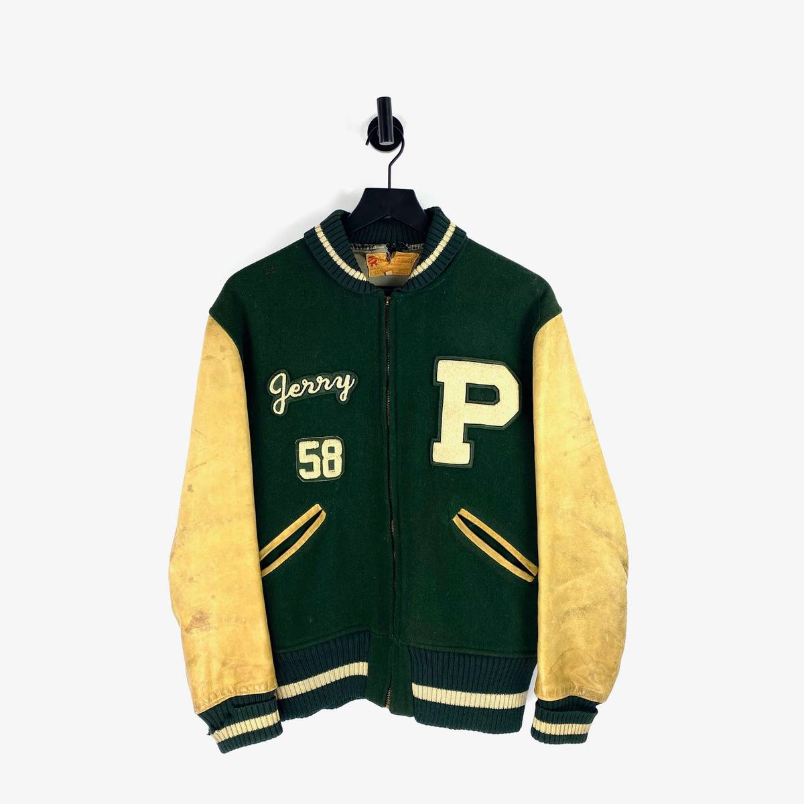
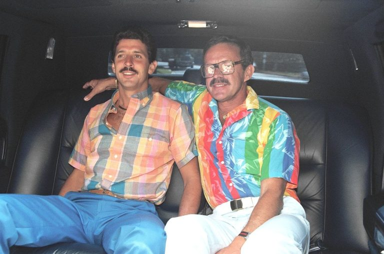

Fashion trends throughout the years

Varsity Jacket (1950's) The varsity jacket, or letterman jacket, was all the rage among teenage and college-age male athletes in the 50s. Traditionally, the outer layer was made of wool or leather and displayed its wearer’s name, a varsity letter, and the school’s mascot. The piece of clothing was considered a sign of esteem, worn mainly among top and team captains athletes (namely those who played basketball or football). Made popular by stars like James Dean and Elvis Presley, this piece of clothing is still worn today—mainly among “jocks.”

Cazals[c]Oversized Cazal glasses were a paragon of '80s fashion. Created by Australian designer and visionary Cari Zalloni, these bold specs were incredibly popular and had celebrity fans like Run DMC and Spike Lee.